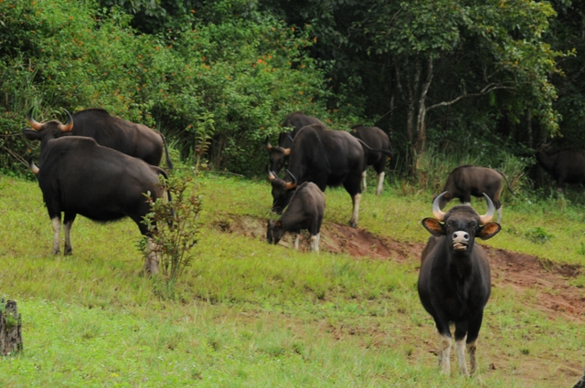
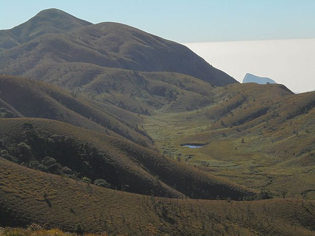
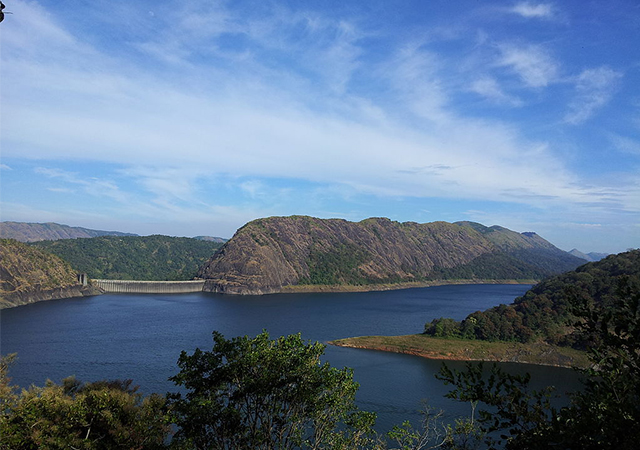
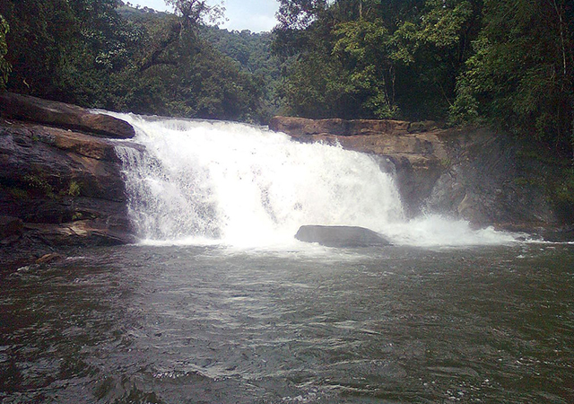
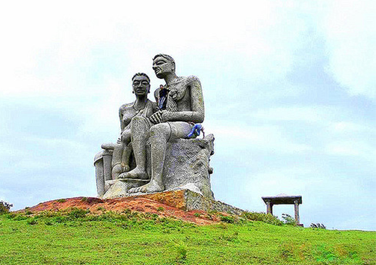

Idukki - The land of spices. Idukki the beautiful high range district of Kerala is the home of some of the most spectacular Dams, waterfalls, exceptionally marvelous hill stations, caves and forests. Idukki's calmness and natural beauty has not been socialized well in India's tourism map. For the people of Kerala, Idukki is always associated with the Dam and Power Generation. But in reality Idukki is much more - The land of spices, the corridor to Tamil Nadu, hot destination for tourism, favorite location for movies, amazing options for adventure tourism and more importantly the thick forests of Idukki is a great savior of many wild animals and birds and a great protector our environmental ecosystem.
1.Idukki Wildlife Sanctuary
The sanctuary is located at a distance of about 58 kilometers from Thodupuzha and extends over Udumpancholataluk of Idukki. Spread over 105 square kilometers and situated at a height of about 450 – 748m above sea level, the sanctuary is home to plenty of endemic flora and fauna.You can see herds of elephants, gaur, boar, deer, wild dogs if you are lucky. The sanctuary is also home to jungle cats, bears and several varieties of poisonous snakes. The avian population is also no less attractive as you can see plenty of woodpeckers, kingfisher, myna, jungle fowl, black bulbul and so on.

2.Meesapulimala
Is a peak in the high ranges of Idukki and an ideal place to start your hiking or trekking trails in Kerala. The mountain forest ecosystem is an attractive feature of Meesapulimala.

3.Idukki Arch Dam
The amazing architecture of the Idukki Dam is what attracts people in the first instant. The dam, built across the river, and located between two hills is one of its kind in Asia and world’s second.Legend has it that these two hills were actually two tribals, Kuravan and Kurathy who were cursed by Lord Rama when they were caught watching Devi Sita bathing in the river.

4.Thommankuthu Waterfalls
The scenic waterfalls near Thodupuzha have a dark past. People say there was once a tribal named Thomman who fell into the waterfall, hence the name. The most curious thing about the waterfall is that it is a seven-step waterfall. Adventure tourism is allowed here. Forest trekking and bathing are other activities.

5.Ramakkalmedu
Ramakkalmedu or Ram + Kal + Medu, is a popular hill station now. This place has a very tall rock that Lord Ram stepped on to search for Devi Sita after she was abducted by Lord of Lanka, Ravan. If you sit here at dawn, you can enjoy mesmerizing views of the sun rising. Absolutely beautiful!
